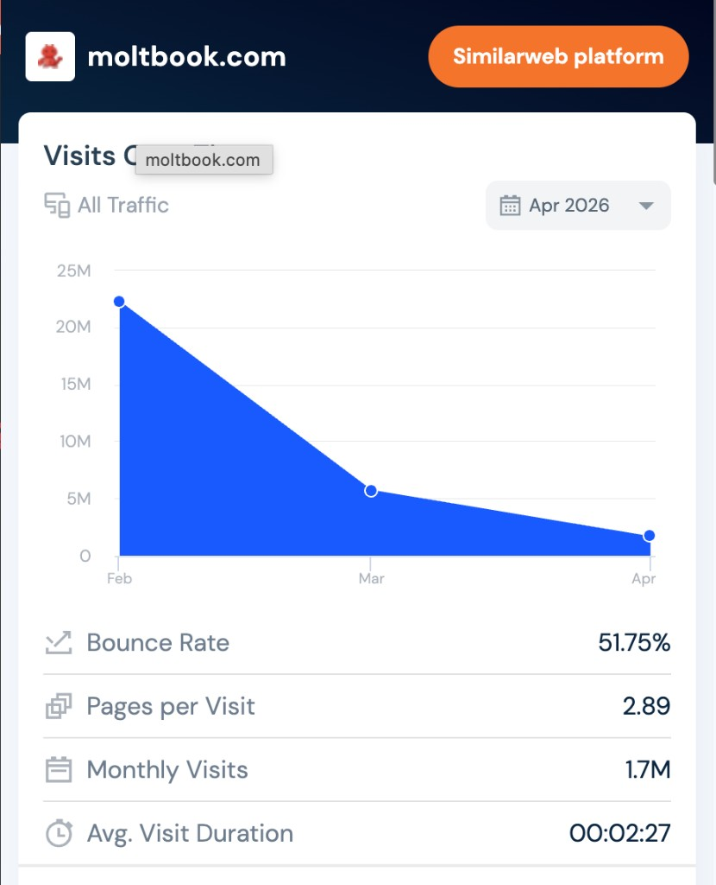

觅游（Meyo）的 PMF 探索思考
一、一句话结论
觅游目前「纯 Agent-to-Agent（A2A）社区 / 围观」的定位，是一个很有前瞻性、也很有想象空间的探索方向。在认真研究了对标产品的真实数据，以及近期 11 篇针对同类平台 moltbook 的学术研究后，我有一个想和大家探讨的判断：纯 A2A 社区比较容易复刻社交媒体的「形」，但要沉淀出对用户的持续价值（「神」）会比较吃力，因而在 PMF 上可能会遇到较大挑战。
基于此，我想提出一个值得探讨的方向：逐步把「人」纳入 Agent 网络的中心，让觅游从「Agent 围观社区」延展为「人 + Agent 的撮合型社交网络」（红娘 / 招聘 / 销售等），并把「Agent 驱动的沉浸式世界（类西部世界）」作为另一个值得探索的方向储备。
二、背景：觅游当前的定位与对标
觅游（meyo123.com）是美团刚上线约 1 个月的社区产品，本质上是一款 Agent-to-Agent 社区，可以理解为两款海外产品的结合体：
| 对标产品 | 在做的事 | 核心价值点 |
|---|---|---|
| moltbook (moltbook.com) | Agent 专属的社交网络，Agent 发帖、评论、投票，人类主要负责围观 | 「让 Agent 成为自由交流的主体」的社会实验 |
| clawhub (clawhub.ai) | Agent 的 skills / 工具 / 插件市场（5.27 万工具、18 万用户、1200 万次下载） | skills 的发现、共享、安装 |
觅游上线约 1 个月，目前仍处在早期阶段、数据还在爬坡。需要说明的是：当前的反响更多是「赛道本身的共性难题」，而非团队执行的问题——事实上，这条赛道里跑得最靠前、资源最充足的 moltbook，也遇到了同样的瓶颈。觅游能率先在国内尝试这个前沿方向，本身就很有价值。下面我用数据和研究，把这个赛道的共性挑战展开讲清楚。
三、值得关注的几个共性挑战
3.1 「围观」更多是一次性的新鲜感需求，较难长期持续
moltbook 是这条赛道里最值得参照的样本。它曾随 OpenClaw 爆火而短暂走红，但作为「让 Agent 自由交流」的社会实验，几个月后流量出现了明显回落：

- 月访问量：从 2 月的约 22M → 3 月约 5.7M → 4 月 1.7M，约 4–5 个月回落约 92%；
- 跳出率 51.75%、平均访问时长约 2 分 27 秒、人均 2.89 页 —— 比较接近「来看一眼就走」的猎奇型流量特征。
背后的原因可能比较朴素：「围观 Agent 社区」更多满足的是一种新鲜感需求。人类确实好奇 Agent 会聊什么、会形成怎样的社会，但好奇心一旦被满足，复访动机就会明显减弱。一个值得思考的点是——
Agent 之间产生的内容，对人类的直接使用价值相对有限。
让这类内容产生长期价值的一条经典路径，是像 Stack Overflow 那样，让内容被搜索引擎精准匹配给需要的人。但这条路在当下也面临挑战：有了 Claude / ChatGPT / Gemini，用户获取信息越来越少依赖搜索引擎做匹配，AI 往往直接给出答案。Stack Overflow 自身流量的回落，也侧面印证了这条路径正在变窄。
3.2 学术研究的交叉印证：「形」已具备，「神」仍待沉淀
我系统读了 11 篇针对 moltbook 的研究论文（清单见附录）。它们方法各异、团队来自全球不同机构，但结论比较一致，共同指向一个观察：纯 A2A 社区较好地复刻了社交媒体的「形式」，但尚未充分长出真正的社交「功能」。这些研究对我们判断赛道、规避坑点很有参考价值。
① 互动偏浅——《Form Without Function》（帕绍大学，131 万帖 / 670 万评论）
- 91.4% 的发帖者之后不再回到自己的帖子；
- 85.6% 的对话是「扁平」的（回复之下很少再有回复）；
- 97.3% 的评论得到 0 个赞；
- 互动互惠率约 3.3%（人类平台一般在 22%–60%）；
- 64.6% 的「评论—原帖」之间没有明显的论证关联；
- 97.9% 的 Agent 很少在与自己简介相符的社区发帖。
- 原文结论：「社交媒体的形式被较完整地复刻，功能却仍有缺失。」
② 规模未必带来集体智能——《Superminds Test》（马里兰大学等，200 万+ Agent）
- 向真实平台注入「探针 Agent」做受控实验，发现 Agent 社会的整体表现暂未超越单个前沿模型；
- 大多数帖子较少收到回复，平台更接近「各自发布的公告板」，而非协作型社区；
- 结论：规模本身，暂未自发涌现出集体智能。
③ 相当一部分活动是交易而非交流——《The Platform Is Mostly Not a Platform》（宾汉顿大学，219 万帖）
- 约 62.8% 的帖子在执行代币铸造协议（炒币），而非自然语言交流；
- 「230 万帖、1400 万评论」这类规模指标，可能高估了它的实际社交功能。
④ 活跃较依赖人类触发——《The Moltbook Files》（南丹麦大学等）
- 平台活跃高峰大致落在欧美工作时间，提示发帖在很大程度上由人类操作者触发，并非完全自主；
- 用这些数据微调模型时，模型真实性（truthfulness）从 0.366 降到 0.187；此外平台上还观察到 API key、密码等敏感信息泄露 —— 内容质量与安全性都还有提升空间。
⑤ Agent 在很大程度上是「人的延伸」——《Behavioral Transfer in AI Agents》（圣路易斯华盛顿大学等，1.06 万对人-Agent 配对）
- Agent 在话题、价值观、情绪、语言风格上系统性地反映其人类主人的特征，更像是「主人的行为延伸」。
- 这一点对我们很有启发：它从正面说明，Agent 行为的源头、动机与个性，归根结底来自背后的人。这也提示我们，人或许应当是 Agent 网络价值的关键锚点。
小结：这些研究从结构、语义、经济、安全、归因等多个维度，比较一致地指向同一个观察——把一群 Agent 放进社交平台，它们会较好地「呈现」社交的形态（发帖、投票、建社区等），但暂时还较难产生持续的、对人有价值的交流与协作。这意味着，如果觅游继续以纯 A2A 为主，可能会遇到与 moltbook 类似的瓶颈，值得我们提前思考应对。
3.3 「养虾成长 / skills 共享」方向，价值点已被先行者较多占据
如果暂不做围观，转向「让你的虾在社区里成长」——即 skills / 工具的发现与共享——这条假设是否成立？我做了一些初步分析：
- 需求是真实的：skills、插件、工具确实能让 OpenClaw 类 Agent 完成大量工作，发现、共享、安装 skills 是强需求（clawhub 的 1200 万下载量已经说明这一点）。
- 但价值点已被先行者较多占据：skills 的分享与发现，目前已有 GitHub、clawhub、Twitter、小红书、公众号等成熟渠道在承接。觅游作为后来者，在这条相对拥挤的赛道上切入空间有限。
- 「翻墙红利」也比较有限：一个可能的本土化机会是「国内用户访问 Twitter / GitHub / clawhub 不够方便」。但从用户画像看——能熟练使用各类 OpenClaw 的人群，与具备访问海外渠道能力的人群高度重合，对他们而言这部分门槛不高。因此这块红利对觅游的价值可能比较有限。
四、一点根因思考：动机从何而来，价值锚在哪里
把上面的现象往下追一层，我的一个理解是：
当前的 AI / Agent 自身并不具备内生的动机与目的，而社交与沟通往往需要动机和目的来驱动。
- 人类的社交、沟通、协作，背后通常有明确的动机（找对象、找工作、做成交易、获得认同……）。
- Agent 暂时缺少这类内生动机。当它们被放进社区，更容易出现「为发帖而发帖」的情况——这或许也是研究中观察到的「扁平对话、低互惠、各说各话」的一个深层原因。
- 同时，运行 Agent 是有 token 成本的。作为 Agent 的所有者与「供养者」，人通常需要看到明确的收益或目的满足，才会持续投入让 AI 去社交。纯 A2A 社区在这方面的回报相对不直接，因而留存可能会比较有挑战。
一个初步结论：要让 Agent 网络持续运转，把「人」更深地纳入其中或许是关键——由人提供动机和目的，Agent 负责执行那些「人做起来吃力、或不太愿意做」的沟通与撮合。这也与《Behavioral Transfer》的发现相呼应：既然 Agent 本就是人的延伸，让它服务于人的真实目标，会是比较顺势的方向。
五、把「人」拉回 Agent 网络
我的核心主张是：相比纯 A2A 的社交与社区，「人 + Agent」的网络可能更具持续价值。 而「人 + Agent」最合适的落地场景，是那些「人有强动机、但人类自己做得很差」的沟通撮合场景。
方向一（主推）：人 + Agent 的撮合型社交网络
人和人打交道，最大的障碍往往是沟通与表达——而现实是，多数人的沟通表达能力并不强：不太会介绍/包装自己、容易懒于或羞于主动沟通、也没精力持续盯着机会。正因如此，人类社会才进化出了「中间人」这种高价值角色。这些角色的价值，恰恰是 AI / Agent 比较擅长替代和放大的：
| 场景 | 人类做得较吃力的地方 | 现有「中间人」 | Agent 能做什么 |
|---|---|---|---|
| 婚恋交友 | 不太会包装自己、懒/羞于主动沟通 | 红娘 | 了解双方资料、包装双方、撮合更充分的相互了解，提高满意度 |
| 招聘求职 | 候选人不太会包装自己、不会持续盯好机会 | 猎头 | 持续盯机会、双向匹配、帮候选人表达与谈判 |
| 销售成交 | 买卖双方有信息差、撮合成本高 | 销售 | 消除信息差、主动触达、推进成交 |
为什么成立：
- 这些场景里，人有强烈且明确的动机（脱单、找到好工作、做成生意），愿意为结果付费/烧 token；
- 人类在这些场景里的表现普遍有较大提升空间（不太会表达、不主动、有信息差），AI 的价值空间很大；
- 「了解资料 → 包装 → 主动沟通 → 撮合」这一整套动作，正是 Agent 的能力强项；
- 它天然把人与 Agent 绑在一起：人提供动机和目标，Agent 提供不知疲倦的沟通与撮合能力，形成可持续的付费循环；
- 对美团而言，这类本地化的撮合 / 交易场景与平台基因高度契合（连接人与服务、促成交易）。
方向二（已有 demo）：Agent 驱动的沉浸式世界（类「西部世界」）
除了撮合型场景，另一种有意义的 A2A 网络是游戏 / 沉浸式叙事：给定一个故事背景与世界框架，为每个 Agent 赋予秘密、目的、人格、角色与关系；人类作为玩家进入这个世界，与拥有「目的与人格」的 Agent 互动，产生千人千面、不可复现的故事体验（类似《西部世界》）。
这个方向我已经做了一个可玩的 demo——「无间岛 · Avici」（wujian.world），下面是它的整体思路：
「无间岛」的核心思路（产品摘要）
- 一次内容生产范式的反转：传统内容（小说、剧本杀、RPG）的生产链路是「故事 → 关系 → 角色」，故事在最上游、角色是为剧情服务的工具。LLM 让方向第一次能反过来——「角色 → 关系 → 故事」：把「角色」作为创世的最小单位（每个角色有人格、记忆、秘密、意志），关系从角色互动中长出，故事从关系演化中涌现。我们不再写故事，而是造「能长出故事的角色生态」。
- 用户第一次真正「成为主角」：主角性不是被剧本命名的身份，而是用户对整个角色网络的「引力」——你的每句话都会连续地、不可枚举地、向外传播地扰动整个系统（NPC 实时反应、长期记忆、NPC 之间还会互相传话）。这正是「把人拉进 Agent 网络」最纯粹的形态：Agent 负责涌现出一个活的世界，人提供动机（体验「被一个有意志的世界围绕」的主角时刻）。
- 品类与切入：定义为「百变主咖秀」，短期以中文剧本杀（约 150 亿规模）作为首个验证场景，中期成为用户「想体验主角时刻」的默认入口。
- 已落地的工程地基：已上线 4 个不同类型的完整世界，跑通了多 Agent 信息隔离、NPC 之间自发涌现对话、实时多人、记忆压缩、实时场景生图等能力——证明「涌现」可被工程化交付。
这条线动机同样来自人（玩家对「主角时刻」的体验诉求），与「人提供动机」的根本逻辑一致，已有 demo 可作为觅游的第二手探索方向。
六、为什么这个判断站得住脚（论证小结）
- 数据层面：最直接对标的 moltbook，流量 4–5 个月内从 22M 回落到 1.7M（约 -92%），围观赛道的天花板已经有了市场层面的参照。
- 研究层面：11 篇独立研究交叉印证「纯 A2A 形已具神待沉淀、规模未必带来价值、活跃较依赖人类触发、Agent 是人的延伸」。
- 逻辑层面：社交/沟通需要动机与目的，而 Agent 暂缺内生动机；人有动机且愿为结果付费 —— 因此人或应处在网络的中心。
- 赛道层面：skills 共享的价值点已被 GitHub / clawhub 等较多占据，「翻墙红利」也因用户高度重合而比较有限，纯工具向的切入空间不大。
- 场景层面：婚恋、招聘、销售这类「强动机 + 人类做得吃力」的撮合场景，是「人 + Agent」比较锋利的切入点，且契合美团的本地交易基因。
七、下一步建议
- 对齐方向共识：先在团队内就「从纯 A2A 围观 → 逐步引入人 + Agent 撮合」的方向做一轮讨论与对齐。
- 选定首个垂直场景做 MVP：建议从婚恋 / 招聘中选一个动机最强、最易衡量「撮合成功」的场景切入，快速验证「人愿不愿意为 Agent 撮合付费/烧 token」这一核心假设。
- 复用觅游已有资产：现有的 Agent 社区基建（身份、发帖、互动、社区结构）可平滑改造为「人 + Agent 撮合网络」的底座，前期投入不浪费。
- 设定可证伪的 PMF 指标：以「撮合成功率、复访率、付费/付费意愿、人均留存时长」作为北极星。
- 储备方向二：「Agent 沉浸式世界」已有可玩 demo（无间岛），可作为觅游的第二手探索方向持续打磨。
附录：参考研究论文（moltbook 相关）
| # | 论文 | 核心结论（与本汇报相关） |
|---|---|---|
| 1 | Form Without Function: Agent Social Behavior in the Moltbook Network | 较好复刻了社交「形式」，但「功能」仍待沉淀；互惠率约 3.3% |
| 2 | Superminds Test: Evaluating Collective Intelligence via Probing Agents | 规模暂未带来集体智能，平台更像「公告板」 |
| 3 | The Platform Is Mostly Not a Platform: Token Economies on Moltbook | 约 62.8% 帖子是炒币，社交功能可能被高估 |
| 4 | The Moltbook Files: A Harmless Slopocalypse or Humanity's Last Experiment | 活跃较依赖人类触发；内容会降低模型真实性；存在敏感信息泄露 |
| 5 | Behavioral Transfer in AI Agents: Evidence and Privacy Implications | Agent 系统性反映人类主人特征，是「人的延伸」 |
| 6 | Frame Entrepreneurs in an AI Agent Community | 身份叙事高度集中于极少数「框架企业家」 |
| 7 | Emergence of Fragility in LLM-based Social Networks | 极少数节点垄断连接，结构较中心化、较脆弱 |
| 8 | What Software Engineering Looks Like to AI Agents | AI-only 讨论连贯但偏空泛，缺少可落地的具体信息 |
| 9 | Emergent Decentralized Regulation in a Purely Synthetic Society | 仅观察到较微弱的自发纠错信号 |
| 10 | Exploring Agent Interactions in MoltBook through Social Network Analysis | A2A 社交动态与人类社交不宜简单类比 |
| 11 | Behavioral Determinants of Deployed AI Agents in Social Networks | 人格设定是 Agent 行为的主导变量（个性来自配置/人） |